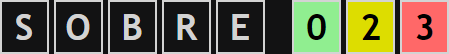

Com es juga a Word500?
Esbrina la paraula correcta en 8 intents o menys.
Després de cada intent, els tres cuadres de colors mostren lo prop que estas de la paraula secreta.
EXEMPLE:

"SOBRE" té 2 lletres de la paraula secreta, però en posicions diferents. Després hi ha tres lletres que no surten a la paraula secreta.

"PRIMA" té una lletra correcta en la posició correcta, una lletra correcta en la posició incorrecta i tres lletres que no surten a la paraula secreta.
El guió baix "_" no pot formar part de paraules, però serveix per poder saltar alguna lletra, mentres busques el teu següent intent.
Si et quedes sense idees, pots clicar el botó de Hint. Et podràs resistir?
Es pot jugar a Word500 en diferents idiomes y nivells. Al nivell "Standard" la paraula secreta no té lletres repetides (AMIGA) y tampoc conté KWZ.
Cada dia hi ha una paraula secreta nova per cada nivell i idioma. Disfruta del joc!
Gabethebabe